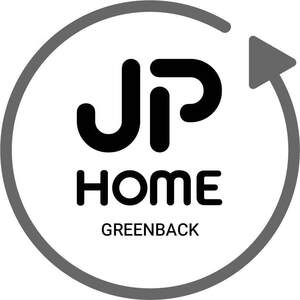

Trade Mark Journal No.2025/034 22 August 2025
UK00004171500 10 March 2025 (35,37,39,42)

- Class 35
- Logistics management and reverse logistics services, supply chain management services; retail or wholesale services in connection with furniture for the home, electronic household appliances and devices, kitchen appliances and devices, kitchenware, dinnerware, cookware, outdoor furniture and accessories, washing machines, tumble dryers, washer dryers, fridge freezers, fridges, freezers, dishwashers, kettles, toasters, slow cookers, food mixers, juicers and blenders, microwaves, cookers, coffee machines, tableware, sofas, armchairs, coffee tables, side tables, console tables, TV stands, media storage units, bookshelves, display cabinets, dining tables, dining chairs, bar stools, sideboards, beds, headboards, bed frames, mattresses, bedside dressers, wardrobes, desks, office chairs, vanity units, storage cabinets, shelves, mirrors, vases, bowls, ornaments, decorative accessories, candles, candle holders, throws, sofa covers, chair pads, blankets, bedding, cushions, floor cushions, beanbags, footstools, wall art, hooks, photo frames, picture frames, curtains, curtain poles, blinds, floor lamps, table lamps, desk lamps, lighting, light shades, towels, towel rails, shower curtains, laundry baskets, storage baskets, storage containers, storage racks, utensil organisers, pedal bins, soap dispensers, soap dishes, toothbrush holders, toilet roll holders, shower caddies, bath mats, rugs, floor mats, runners, door mats, shoe racks, coat racks, plant pots, indoor planters, artificial flowers, clocks, draught excluders, sports, fitness and bodybuilding equipment and accessories, televisions, home theatre systems, gaming consoles, smart speakers, wireless speakers, home audio systems, speakers and Hi-Fi systems, radios, and computers via online marketplaces ; co mmercial intermediation services for second-hand products via online marketplaces; organisation and management of product donations to charitable organisations; stock management services et de distribution of surplus or unsold products; advertising ; business management; business administration; business administration services for processing sales made on the internet; clerical services; reverse logistics services, namely, optimisation and management of product return flows on behalf of third parties; .
- Class 37
- Furniture repair service including sofas, storage units, chairs, armchairs, footstools, tables, desks, bars, secretaries, lighting, appliances, bedding, decorations; reconditioning and refurbishing services for furniture, including sofas, storage units, chairs, armchairs, footstools, tables, desks, bars, secretaries, lighting fixtures, household appliances, bedding and second-hand decorations; repair and refurbishment of used furniture, including sofas, storage units, chairs, armchairs, footstools, tables, desks, bars, secretaries, light fittings, household appliances, bedding and decorations; rec onditioning and upgrading services for second-hand products; repair and reconditioning of used products.
- Class 39
- Transport; packaging and storage of goods; reverse logistics services, namely, organisation of product return flows on behalf of third parties; storage and shipping of goods; transport and distribution of returned products to resale channels, charitable organisations or recycling schemes; delivery and collection services for returned products for their reuse or environment-friendly disposal.
- Class 42
- Product quality assessment and testing services; product inspection for quality control purposes; software design, development and programming; design, maintenance and updating of software for logistics, supply chain management and e-commerce portals; provision of an online platform for reverse logistics management.
ZAMENHOF EXPLOITATION
Representative: Wynne-Jones IP Limited